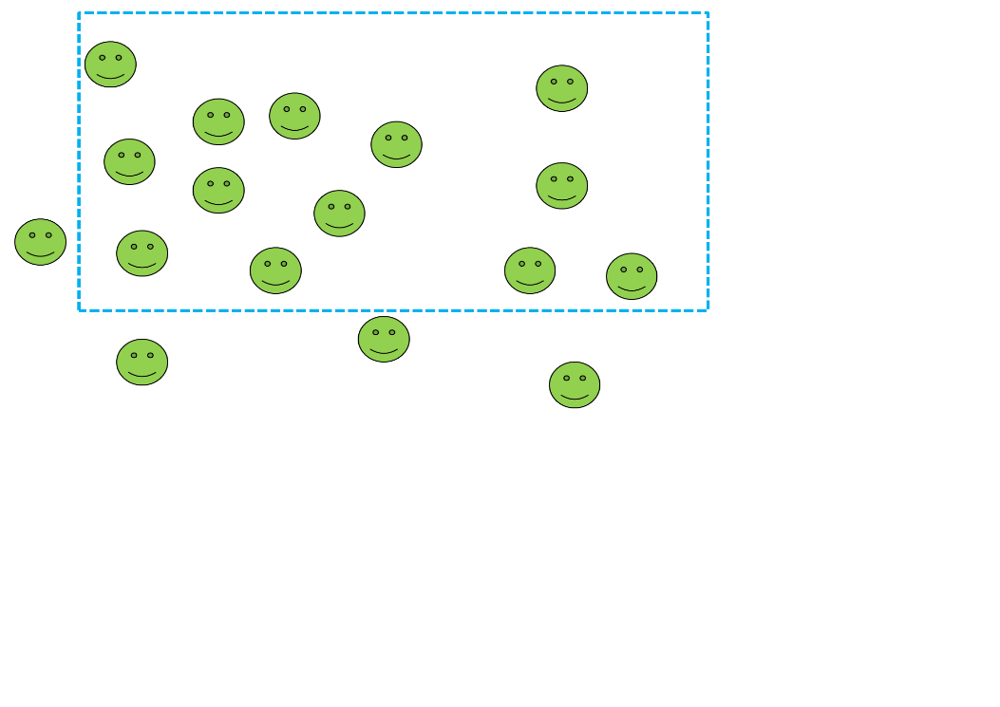

- What is clinical epidemiology?
- Types of study
- Bias, confounding and causality
- Contingency tables
- Hypothesis testing
- Power
- Bland Altman plots
- Bayes theorem
Basic statistics and epidemiology
Dr Iain Crossingham
Consultant Physician & Intensivist
Royal Blackburn Hospital
Agenda
Epidemiology
Not this bloke

Source: Wikipedia
Epidemiology


Source: Wikipedia
Clinical Epidemiology

Source: McMaster University
- Sackett refused to define his field
- The "basic science" of evaluating the effectiveness of clinical practice
Association between exposure and outcome
True association
Bias
Confounding
Random error
Bias
Selection bias
- Study participants are not reflective of the reference population
- Comparison groups are not comparable
Information bias
- Systematic differences in the accuracy of information collected between comparison groups
Does smoking cause lung cancer?
Correcting for bias
Don't have it in the first place!
- There is no statistical method that can retrospectively save a biased study.
Confounding
A confounder is associated with both the exposure and the outcome but is not on the causal pathway from exposure to outcome
Confounding - an example
| Outcome | |||
|---|---|---|---|
| Pancreatic cancer cases | Controls | ||
| Exposure | Coffee drinkers | 450 | 200 |
| Not coffee drinkers | 300 | 250 | |
Odds ratio 1.9
Stratify by smoking
| Outcome | ||||
|---|---|---|---|---|
| Pancreatic cancer cases | Controls | |||
| Exposure | Smokers | Coffee drinkers | 400 | 100 |
| Not coffee drinkers | 200 | 50 | ||
| Non-smokers | Coffee drinkers | 50 | 100 | |
| Not coffee drinkers | 100 | 200 | ||
Odds ratio in smokers 1.0
Odds ratio in non-smokers 1.0
Types of study
Ecological studies
Observations made using aggregated data
Mainly for population level and public health applications
May be appropriate for some ICU studies
Beware ecological fallacy
Example of an ecological study
35 German ICUs
Collected data on monthly antibiotic use and numbers of nosocomial infections
High use of glycopeptides and quinolones associated with CVC infections
Doesn't directly look at whether the patients who received glycopeptides got CVC infections
Meyer et al. Intensive Care Med. 2004; 30: 1089
Cohort studies

Wait...
Cohort studies
Cohort studies
Advantages
- Exposure measured before outcome
- Examine multiple exposures and outcomes
Disadvantages
- Slow to carry out
- Inefficient for rare diseases
- Bias
Case control studies

Analysis of case control studies
Don't know size of population cases and controls drawn from
Can't calculate measures like risks and rates
Therefore use odds ratios
Can be shown that these approximate risk ratios or rate ratios under certain circumstances
Case control studies
Advantages
- Rapid to carry out
- Efficient for rare diseases
Disadvantages
- Prone to selection bias
- Prone to information bias
- Reverse causality
I would only trust six people in the world to carry out a proper case control study
David Sackett
Randomised controlled trials
Causality

Source Wikipedia
- Based on a lecture to the Royal Society of Medicine
- Framework for assessing causality
Bradford Hill A. The environment and disease: association or causation? J R Soc Med. 1965; 58: 295-300
Bradford Hill criteria
- Strength of association
- Consistency across studies
- Specificity
- Temporality
- Biological gradient (eg. dose response)
- Plausibility
- Coherence (eg. between laboratory and epidemiology findings)
- Experiment
- Analogy
Contingency tables
| Outcome / Gold standard | |||
|---|---|---|---|
| Positive | Negative | ||
| Exposure / new test | Positive | True positives | False positives |
| Negative | False negatives | True negatives | |
An example
Study of consecutive patients requiring endotracheal intubation by ED doctors in a UK teaching hospital. A subset had pre intubation MP grade recorded.
| Difficult intubation | |||
|---|---|---|---|
| Positive | Negative | ||
| MP grade | 3-4 | 3 | 22 |
| 1-2 | 16 | 45 | |
- What proportion of difficult intubations does MP grade correctly identify?
- What proportion of easy intubations does MP grade correctly identify?
- If the ED doctor asks for help, how likely are they to actually need it?
- If the ED doctor says it will be easy, how likely is (s)he to be OK?
- Overall how good is MP grade?
Emerg Med J 2005; 22: 99-102
Sensitivity
What proportion of difficult intubations does MP grade correctly identify?
| Difficult intubation | |||
|---|---|---|---|
| Positive | Negative | ||
| MP grade | 3-4 | 3 | 22 |
| 1-2 | 16 | 45 | |
If we only test those with the disease, how many would we identify?
\[ Sensitivity = \frac {TP}{TP+FN} \] \[ = \frac {3}{3+16} \] \[ = 16\% \]
Specificity
What proportion of easy intubations does MP grade correctly identify?
| Difficult intubation | |||
|---|---|---|---|
| Positive | Negative | ||
| MP grade | 3-4 | 3 | 22 |
| 1-2 | 16 | 45 | |
If we only test those without the disease, how many would we give the all clear to?
\[ Specificity = \frac {TN}{FP+TN} \] \[ = \frac {45}{22+45} \] \[ = 67\% \]
Positive predictive value
If the ED doctor asks for help, how likely are they to actually need it?
| Difficult intubation | |||
|---|---|---|---|
| Positive | Negative | ||
| MP grade | 3-4 | 3 | 22 |
| 1-2 | 16 | 45 | |
If the test is positive, how many actually have the disease?
\[ Positive predictive value = \frac {TP}{TP+FP} \] \[ = \frac {3}{3+22} \] \[ = 12\% \]
Negative predictive value
If the ED doctor says it will be easy, how likely is (s)he to be OK?
| Difficult intubation | |||
|---|---|---|---|
| Positive | Negative | ||
| MP grade | 3-4 | 3 | 22 |
| 1-2 | 16 | 45 | |
If the test is negative, what is the probability of them being OK?
\[ Negative predictive value = \frac {TN}{FN+TN} \] \[ = \frac {45}{16+45} \] \[ = 74\% \]
Accuracy
Overall how good is MP grade?
| Difficult intubation | |||
|---|---|---|---|
| Positive | Negative | ||
| MP grade | 3-4 | 3 | 22 |
| 1-2 | 16 | 45 | |
How often does the test get it right?
\[ Accuracy = \frac {TP+TN}{TP+FP+FN+TN} \] \[ = \frac {3+45}{3+22+16+45} \] \[ = 56\% \]
Which is the most important in this case?
- Sensitivity
- Specificity
- Positive predictive value
- Negative predictive value
- Accuracy
Why?
Effect of population prevalence
Assume a test with sensitivity and specificity of 99% Population A has 100 000 people and a disease prevalence 50%
| Outcome / Gold standard | |||
|---|---|---|---|
| Positive | Negative | ||
| Exposure / new test | Positive | 49500 | 500 |
| Negative | 500 | 49500 | |
PPV = 99%
NPV = 99%
Effect of population prevalence
Assume a test with sensitivity and specificity of 99% Population B has 100 000 people and a disease prevalence 0.1%
| Outcome / Gold standard | |||
|---|---|---|---|
| Positive | Negative | ||
| Exposure / new test | Positive | 99 | 999 |
| Negative | 1 | 98901 | |
PPV = 9%
NPV = 99.999%
[T]he glitter of the t table diverts attention from the inadequacies of the fare.
Sir Austin Bradford Hill
Hypothesis testing
Easier to "prove" something false than true
Therefore set up a null hypothesis and try to show it is inconsistent with the data
If it is inconsistent then reject in favour of an alternative hypothesis
Errors in hypothesis testing
Type 1 error, alpha, false positive:-
reject the null hypothesis when it is true
Type 2 error, beta, false negative:-
non significant result when null hypothesis is false
What is a p value?
The p value is the chance of seeing a result of that magnitude or greater if the null hypothesis were correct.
If the true value is 0, an experiment to estimate this value will give a result in one of the red areas 5% of the time.
Confidence intervals
A confidence interval is a range that we can be reasonably (typically 95%) confident the true value lies within.
In the example here we are 95% confident our estimate lies in the green area of the graph
Power calculations
- Take primary outcome and estimate a "reasonable" result
- Assume alpha = 0.05
- Set beta so that power = 1-beta. Usual values for power are 0.8, 0.85 or 0.9
- Work back from the reasonable result to find the smallest n required to give a 1-beta chance of getting a statistically significant result
Why is subgroup analysis a bad thing?
Approximately 1 in 20 statistical tests that should be negative will give a spurious positive result by the play of chance
If groups as specified post hoc then likely their selection is likely to be influenced by knowledge of the data
Subgroup analysis
Bland Altman plots
- Slightly obscure and first described by Tukey not Bland and Altman
- But ... specifically mentioned in the FRCA curriculum
- Used for comparing two tests of the same measure, for example two different cardiac output monitors
Bayes theorem
\[ P(A | B) = \frac {P(B | A) P(A)}{P(B)} \]
Why Bayesian analysis?
- More frequently used in last few years as availability of computing power and software (eg. BUGS, JAGS)
- Allows efficient use of pre existing knowledge base
- Avoids "intention" problem with frequentist approach to statistics
Is this coin fair?
A coin is tossed 26 times
TTTTTHTTTHHTTHTHTTTHHTTTTH
Depends what you meant to do!
Plan to toss the coin 26 times

Plan to toss the coin until 8 heads came up
Questions?
Slides available at https://iainxingham.github.io/Presentations